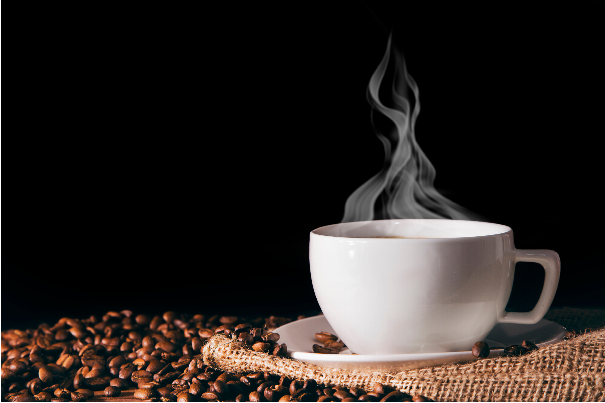

Cafe
Gourmet
Cafe
Marago
Cafe Gourmet
Cafe que ha sido seleccionado desde la semilla que da lugar a la planta la cual es ubicada en una zona con el microclima y la altura(minimo 1000 msnm) adecuados para su correcto crecimiento,maduraciòn,floraciòn y crecimiento de sus futos.
Intensidad
Cuerpo
Tueste
Comprar

Cafe Marago
Este cafe se caracteriza por una acidez intermedia sin ser tan fuerte como otras variedades, es un cafe especial debido a que los los granos son grandes y uniformes, asi como donde se cultiva tiene que ser en terrenos mayores de 1000 s.n.m haciendolo un cafe estrictamente de altura, reconocido mundialmente por su excelente calidad, aroma excepcional y gran sabor.
Intensidad
Cuerpo
Tueste
Comprar